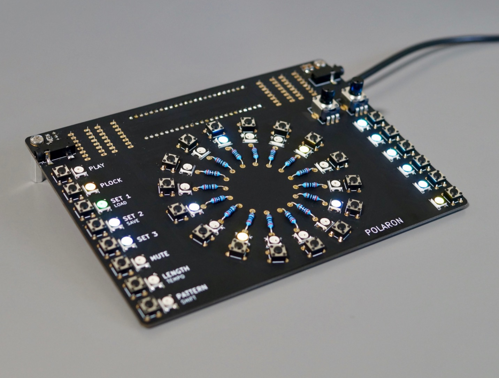

Digital drum machine based on the Teensy 3.6.

Main features: - 16 step sequencer - 6 instrument tracks - 16 patterns per track - load/save projects to SD card - 2 pots for parameter control - parameter locks: all instrument parameters can be recorded for each step - different pattern length for each instrument track - sync to midi-clock (usb-midi) or trigger input - crunchy 12bit stereo outputs
All DB data
- Name: Polaron
- Author: Zueblin
- Link: https://github.com/zueblin/Polaron
- Demo: https://www.youtube.com/watch?v=JC_pZTxMb0c
- Picture: ../pics/polaron.jpg
- Description: Digital drum machine based on the Teensy 3.6.
- Notes: **Main features: - 16 step sequencer - 6 instrument tracks - 16 patterns per track - load/save projects to SD card - 2 pots for parameter control - parameter locks: all instrument parameters can be recorded for each step - different pattern length for each instrument track - sync to midi-clock (usb-midi) or trigger input - crunchy 12bit stereo outputs **
- Artifacts: {“Schematic”=>true}{“PCB”=>true}{“BOM”=>true}{“FW”=>true}{“Docs”=>false}{“Enclosure”=>false}
- Tags: DrumDigitalTeensyMIDI
- Level: Newbe
{kind=link}